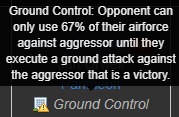
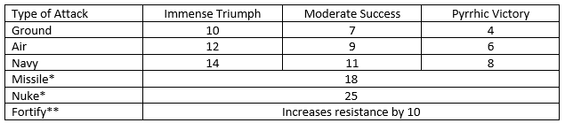
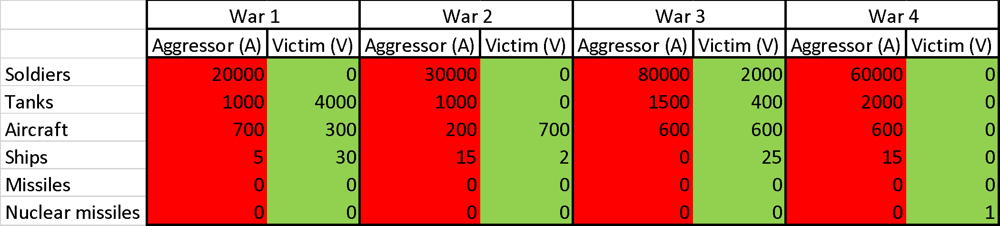

Your ships are fighting against opponent’s ships. Immense triumph brings Blockade (opponent cannot trade with other countries or get resources or money from the bank).

Introduction
This guide will introduce basic game mechanics of warfare, units, battles and resistance.
Units
Soldiers:
Cheap, quick to build, probably not going to win you a war though, but good for raiding money. Built-in barracks,
one barracks can hold 3,000 soldiers. Use when fighting an opponent without other military units without
munitions in order to save on resources.
| Upkeep: | 1.25 $ / 1.88 $ per day (war/peace)+little bit of food |
| Cost: | 2 $ |
| Uses: | 1 munition per 5,000 soldiers (unless you specify not to, they are by 75% weaker without it). |
Tanks:
More expensive and powerful than soldiers, the easiest way to win a ground battle is to overpower with tanks,
vulnerable to planes though. Built in factories, one factory can hold 250 tanks.
| Upkeep: | 50 $ / 75 $ per day |
| Cost: | 60 $ + 1 steel |
| Uses: | 1 gasoline and 1 munition per 100 tanks per battle |
Aircraft:
Most versatile (and the most powerful) unit in the game, can attack any type of unit while still destroying enemy
aircraft and infrastructure, takes longer time to build (uses munitions and gasoline). They are built in hangars,
one hangar can hold 18 aircraft.
| Upkeep: | 500 $ / 750 $ per day |
| Cost: | 4,000 $ + 3 aluminium |
| Uses: | 1 gasoline and 1 munition per 4 aircrafts per battle |
Ships:
Not as versatile as aircraft but can do massive infrastructure damage and easiest way to decrease morale of the
enemy, used in blockades that prevent your opponent from moving and resources into or out of their nation.
They are fairly easily destroyed. Built in drydocks, one drydock can hold 5 ships.
| Upkeep: | 3750 $ / 5625 $ per day |
| Cost: | 50,000 $ + 25 steel |
| Uses: | 2 gasoline and 3 munitions per 1 ship per battle |
Types of battles
Before fighting you can choose the type of battle. Each operation costs a certain number of action points. Each side starts with 6 military action points (unless you or the enemy have a fortress in which case it is 5 or if the defender has blitzkrieg it is one extra) and gets another every turn (two hours). Ground Attacks cost 3, Air and Naval operations cost 4, missiles are 8, and nukes cost a whole 12 (one day’s worth)
Ground Battle:
Your tanks and soldiers are fighting against opponent’s tanks and soldiers. If the
attacker wins, he can steal money from the victim. Immense triumph brings ground
control, which means that the opponent can use just a two-third of his airplanes. The
victim loses part of his infrastructure.

Air battle:
Your aircraft are fighting against opponent’s aircraft and bombs enemy’s soldiers, tanks,
aircraft or ships (attacker can choose). These units can die but do not add to the defence
value. Immense triumph brings air superiority, enemy’s tanks have just 1/2 of value.
Naval battle:
Your ships are fighting against opponent’s ships. Immense triumph brings Blockade (opponent
cannot trade with other countries or get resources or money from the bank).

Resistance
Winning a battle reduces the enemy’s resistance by a certain amount, with Immense Triumphs doing the most. With victory, each type of unit reduces a certain amount of resistance based on the level of victory:

The way to defeat an opponent is to reduce their resistance to 0. Everybody starts with 100 resistance. Once their resistance is reduced to zero, you loot their resources, their alliance bank’s resources, and damage 10% of the infrastructure in each of their cities. The fastest way to defeat an opponent in war (fewest military action points) is 5 naval attacks (14 x 5 = 70) and 3 ground attacks (10 x 3 = 30), assuming immense triumph achieved for each.
Peace
Peace is automatically made after five days of fighting if no one reduced the resistance to 0. Peace can be as well agreed by both sides beforehand. If you offer peace or receive an offering of peace, any further attacks will cancel the peace offer.
Strategy
Strategy used in every war depends on you and your enemies’ units. The next three paragraphs are just an example of a very broad (but useful) strategy.
First, the most important thing to be done is to have more aircraft than your opponent. This is because aircraft can be used to destroy all other units. If you have more aircraft than your opponent, you will sooner or later get the advantage on the ground and on the sea as well. When you start the war, your primary goal is to decrease the number of your opponent’s aircraft as quickly as possible. Also, with air control, only half of the tanks the opponent has can be used.
Second, it is important to gain ground advantage. This is because when a nation has ground control, the opponent can only use 67% of their aircraft, and therefore, easily lose air superiority.
Third, and finally, you should take control of the sea by creating naval blockade. This is very important if you want to prevent the person from getting resources and money from other players or their alliance. Also, it can happen that your enemy will blockade you, however, if you have warchest (extra resources that you can use if you are blockaded) and air superiority, you should be fine and break the blockade in a day or two.
Examples

War 1: Aggressor has more aircraft, however he has less ground units and ships. ‘A’ should attack his aircraft to strengthen his supremacy. Although ‘V’ will soon gain ground and/or naval control, ‘A’ should eventually win this war by airstrikes on the ground and naval units. This is an example how can aircrafts themselves win the war.
War 2: Aggressor has more ground units and naval units. ‘V’ has, however, significant air superiority over his opponent. Although this war will be costly for the ‘V’ (stolen money and infra damage), he should be able to win this war by continuing airstrikes. This is similar example as War 1, just as a defender.
War 3: Aggressor has significantly more ground units. ‘A’ should get ground control first to disable 33% of aircraft of the victim, allowing them to gain air superiority on future attacks. Although ‘A’ will be blockaded, he should win this war. This example is showing that air attack should not always be the first thing to do in war.
War 4: Aggressor has significantly more units. However, ‘V’ has nuclear missile. If the only reason of the war is raiding, it is not worth it – ‘A’ will win, however, the nuclear missile will destroy a lot of infrastructure (at 2000 infra approximately 17 mil. USD). The raid would not make sense unless ‘A’ use spies to destroy the nuke.
Espionage
Espionage operations are a game mechanics designed to allow players to sabotage each other covertly. You can have 50 (60 with project) spies at a time. You can create just 2 (3 with Intelligence Agency project) spies per day. Therefore, even during the peace, you should create as many spies as possible up to the maximum. More spies used in an attack increases the chance of a successful operation and the more spies you have on hand increases the chance to defend against enemies’ operations.
You can make 1 espionage operations (2 with Intelligence Agency project) per day.
Test your self: (Try this question to help you on the test!)
Should you prioritize aircraft over all other units?
Website © Erik Christensen
Resources © Tyrion Lanister